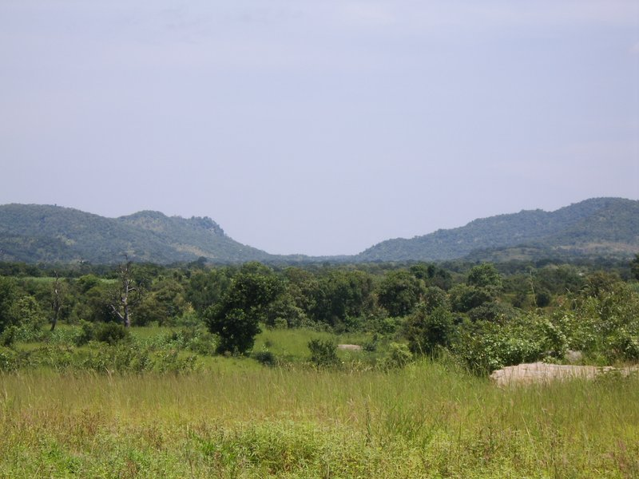
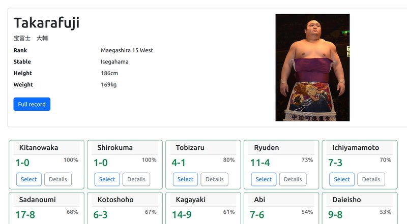
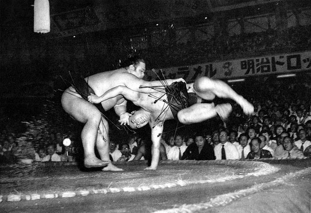

Stuart McGill homepage
Cicipu language

Sumo
Makuuchi (top division) head-2-head visualisation

Longitudinal kimarite (winning techniques) visualisation

Source: Asahi Shimbun Jar Photo Masterpiece Collection 1954